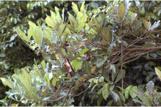
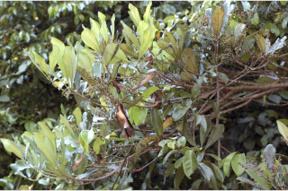

Large trees, often buttressed, up to 35 m tall
35 ಮೀ ಎತ್ತರದವರೆವಿಗೆ ಬೆಳೆಯುವ ಈ ದೊಡ್ಡ ಮರಗಳು ಸಾಮಾನ್ಯವಾಗಿ ಆನಿಕೆಗಳನ್ನು ಹೊಂದಿರುತ್ತವೆ.
35 മീറ്ററോളം ഉയരത്തില് വളരുന്നതും, വപ്രമൂലത്തോട്കൂടിയതുമായ, വന് മരങ്ങള്.
உயர்ந்த பெரிய மரம், தாங்கு வேர் (பட்ரஸ்டு) அமைப்புடன் 35 மீ. உயரம் வரை வளரக்கூடியது.
Bark fissured.
ತೊಗಟೆಯು ಸೀಳಿಕಾ ವಿನ್ಯಾಸದಲ್ಲಿರುತ್ತದೆ.
പുറംതൊലി വിണ്ടുകീറിയത്
மரத்தின் பட்டை பிளவுகளுடையது.
Branchlets rough, stout, glabrous.
ಕಿರುಕೊಂಬೆಗಳು ಒರಟು ,ಬಲಿಷ್ಟಹಾಗೂ ರೋಮರಹಿತವಾಗಿರುತ್ತವೆ.
ഉപശാഖകള് പരുക്കനും, ഉറച്ചതും, അരോമിലവുമാണ്.
சிறிய நுனிக்கிளைகள் சொரசொரப்பானதாகவும், தடித்தும், உரோமங்களற்றும் காணப்படும்.
Latex dirty white turns to black.
ಸಸ್ಯಕ್ಷೀರ ಕಪ್ಪುಬಣ್ಣವುಳ್ಳದಾಗಿರುತ್ತದೆ
സ്രവം കറുത്തത്.
கறுப்பு நிறம்.
Leaves simple, alternate, spiral, clustered at twig ends; petiole 1-2.5 cm long, planoconvex in cross section, glabrous, with a pair of caducous spurs; lamina 6.5-16 x 3-5 cm, oblanceolate to narrow obovate, apex rounded or sometimes emarginate, base cuneate to decurrent, margin entire or sometimes revolute when dry, coriaceous, glabrous; midrib flat or raised above; secondary_nerves 6-11 pairs; tertiary_nerves reticulate.
ಎಲೆಗಳು ಸರಳ, ಪರ್ಯಾಯ – ಸುತ್ತು ಜೋಡನಾ ವ್ಯವಸ್ಥೆಯಲ್ಲಿ ಕುಡಿಕೊಂಬೆಗಳ ತುದಿಯಲ್ಲಿ ಗುಂಪಾಗಿರುತ್ತವೆ;ಎಲೆತೊಟ್ಟು1ರಿಂದ 2 ಸೆಂ.ಮೀ. ಉದ್ದವಾಗಿದ್ದು ಅಡ್ದ ಸೀಳಿದಾಗ ಸಪಾಟ ಪೀನ ಮಧ್ಯ ಆಕಾರದಲ್ಲಿ ಕಂಡುಬರುತ್ತದೆ.ಚಾಚುಚೀಲಗಳು ಒಂದು ಜೋಡಿಯಿದ್ದು ಕ್ರಮೇಣ ಉದುರಿಹೋಗುವಂತಹವು; ಎಲೆ ಪತ್ರ 6.5 – 16 x 3-5 ಸೆಂ.ಮೀ. ಗಾತ್ರವನ್ನು ಹೊಂದಿರುತ್ತದೆ ಎಲೆಗಳ ಆಕಾರ, ಬುಗುರಿ-ಈಟಿ ಸಮ್ಮಿಶ್ರಾಕಾರದಿಂದ ಕಡಿಮೆ ಅಗಲವುಳ್ಳ ಬುಗುರಿಯಾಕಾರದವುಗಳಾಗಿರುತ್ತವೆ.ಎಲೆತುದಿ ಗುಂಡಾಕಾರ ಅಥವಾ ಕೆಲವು ವೇಳೆ ಧೀರ್ಘ- ಕಚ್ಚುಳ್ಳದ್ದಾಗಿರುತ್ತದೆ . ಎಲೆ ಬುಡ ಬೆಣೆಯಾಕಾರದಿಂದ ಕಾಂಡದವರೆವಿಗೂ ವಿಸ್ತಾರಗೊಳ್ಳುವ ರೀತಿಯದ್ದಾಗಿರುತ್ತದೆ. ಅಂಚು ನಯವಾಗಿದ್ದು ಕೆಲವು ವೇಳೆ ಒಣಗಿದಾಗ ಹಿಂಸುರುಳಿಗೊಳ್ಳುತ್ತದೆ,ಮೇಲ್ಮೈ ತೊಗಲಿನ ತರಹವಿದ್ದು ರೋಮರಹಿತವಾಗಿರುತ್ತದೆ; ಮಧ್ಯನಾಳ ಪತ್ರದ ಮೇಲ್ಬಾಗದಲ್ಲಿ ಚಪ್ಪಟೆ ಅಥವಾ ಮೇಲೆದ್ದಿರುತ್ತದೆ; ಪತ್ರದಲ್ಲಿ ಸುಮಾರು 6 ರಿಂದ 11 ಜೋಡಿ ಎರಡನೇ ದರ್ಜೆ ನಾಳಗಳಿದ್ದು ಮೂರನೇ ದರ್ಜೆ ನಾಳಗಳು ಜಾಲಬಂಧ ವಿನ್ಯಾಸ ಹೊಂದಿರುತ್ತವೆ.
ഇലകള് ലഘുവും, വര്ത്തുളമായി, ഏകാന്തരക്രമത്തില് കമ്പുകളുടെ അറ്റത്ത് കൂട്ടമായി ക്രമീകരിച്ചിരിക്കുന്നതുമാണ്; ഇലഞെട്ട് 1 മുതല് 2.5 സെ.മീ. നീളമുള്ളതും, അരോമിലവും, കുറുകേയുള്ള ഛോദത്തില് മേല്ഭാഗം പരന്നും കീഴ്ഭാഗം ഉരുണ്ടിരിക്കുന്നതുമായ രൂപത്തിലുമാണ്, കൊഴിഞ്ഞ് പോകുന്ന ഒരു ജോഡി കുതിമുളക് പോലത്തെ മുഴകള് ഉണ്ടിതിന്; പത്രഫലകം 6.5 സെ.മീ. മുതല് 16 സെ.മീ. നീളവും 3 മുതല് 5 സെ.മീ. വീതിയുമുള്ളതാണ്, അപകുന്താകാരം തുടങ്ങി നേര്ത്ത അപഅണ്ഡാകാരത്തോട്കൂടിയ ഇതിന്റെ അഗ്രം വൃത്താകാരമോ ചിലപ്പോള് മധ്യത്തിലൊരു ചെറുവെട്ടോടുകൂടിയ വൃത്താകാരമോ ആണ്, പത്രാധാരം ആപ്പ് ആകൃതിയിലോ നിണ്ട് ശാഖകളെ പൊതിഞ്ഞ് നില്ക്കുന്ന വിധത്തിലോ ആണ്, അരികുകള് അവിഭജിതമോ ചിലപ്പോള് ഉണങ്ങുമ്പോള് അകത്തേക്ക് വളയുന്നതോ ആണ്; ചര്മ്മില പ്രകൃതത്തോടുകൂടിയതും അരോമിലവുമാണ്. മധ്യസില മുകളില് പരന്നോ ഉയര്ന്നു നില്ക്കുന്നതോ ആണ്. ദ്വിതീയ ഞരമ്പുകള് 6 മുതല് 11 വരെ ജോഡി; ത്രിതീയ ഞരമ്പുകള് ജാലികാവിന്യാസം തീര്ക്കുന്നു.
இலைகள் தனித்தவை, மாற்றுஅடுக்கமானவை, சுழல் போன்று அமைந்தவை, நுனிக்கிளையில் இலைகள் கூட்டமாக மற்றும் நெருக்கமாகமைந்தவை; இலைக்காம்பு 1-2.5 செ.மீ. நீளமுடையது, குறுக்குவெட்டுத் தோற்றத்தில் பிளேனோகான்வக்ஸ், உரோமங்களற்றது, ஒரு ஜோடி உதிரக்கூடிய ஸ்பர் இலைக்காம்பில் காணப்படும்; இலை அலகு 6.5 X 3.5 செ.மீ., தலைகீழ் ஈட்டி வடிவம் முதல் குறுகிய தலைகீழ் முட்டை வடிவம், அலகின் நுனி வட்டமாகவும் அல்லது சில நேரங்களில் சிறிய பள்ளங்களுடையது (ஈமார்ஜினேட்), அலகின் தளம் ஆப்பு வடிவம் முதல் டெக்கரண்ட், காய்ந்த இலை அலகின் விளிம்பு முழுமையானது அல்லது உலரும் போது பின்புறம் வளைந்து (ரெவலுட்) காணப்படும், கோரியேசியஸ், கீழ்பரப்பு உரோமங்களற்றது, மையநரம்பு இலையின் பரப்பிற்கு சமதளமானது அல்லது பரப்பைவிட உயர்ந்தது; இரண்டாம் நிலை நரம்புகள் 6-11 ஜோடிகள், மூன்றாம் நிலை நரம்புகள் வலைபின்னல் அமைப்பு கொண்டது.
Inflorescence terminal panicle, dark purple-brown tomentose; flowers polygamous, petals ovate, pubescent inside.
ಪುಷ್ಪಮಂಜರಿ ಅಗ್ರಸ್ಥಾನದಲ್ಲಿದ್ದು ಪುನರಾವೃತ್ತಿಯಾಗಿ ಕವಲೊಡೆದ ಮಧ್ಯಾಭಿಸರ ಮಾದರಿಯದಾಗಿದ್ದು, ಕಂದು ಮಿಶ್ರಿತ ಕಡು ಕೆನ್ನೀಲಿ ಬಣ್ಣ ಹಾಗೂ ದಟ್ಟ- ಮೃದುತುಪ್ಪಳವನ್ನು ಹೊಂದಿರುತ್ತದೆ ಹೂಗಳು ಸಂಕೀರ್ಣಲಿಂಗಿಗಳು; ದಳಗಳು ಅಂಡಾಕಾರದಲ್ಲಿದ್ದು ಒಳಭಾಗದಲ್ಲಿ ಮೃದುತುಪ್ಪಳವನ್ನು ಹೊಂದಿರುತ್ತದೆ.
പൂങ്കുലകള് ഇരുണ്ട ഊത-തവിട്ട് നിറത്തിലുള്ള, രോമാവൃതമായ ഉച്ഛസ്ഥ പാനിക്കിളുകളാണ; പൂക്കള് ബഹുലിംഗികളും, അകത്ത് രോമിലമായ, അണ്ഡാകാര ദളങ്ങളോടു കൂടിയതുമാണ്.
மஞ்சரி தண்டின் நுனியில் அமைந்த பேனிக்கிள், அடர்ந்த ஊதா-அரக்கு மென்உரோமங்கள்; மலர்கள் இருபாலானவை; அல்லி வட்டம் முட்டை வடிவானது, அல்லி வட்டத்தின் உட்புறம் உரோமங்கள் காணப்படும்.
Drupe, ellipsoid-oblong, striate (usually after drying) 3.8 x 1.5 cm, 1-seeded.
ಕಾಯಿಗಳು ಡ್ರೂಪ್ ಮಾದರಿಯವು ಮಾದರಿಯವು; ಆಕಾರದಲ್ಲಿ ಚತುರಸ್ರಾಕಾರದ ಅಂಡವೃತ್ತಾಕೃತಿಯಲ್ಲಿ ಇರುವ ಕಾಯಿಗಳು ಮೇಲ್ಮೈ ಯಲ್ಲಿ ಸಾಮನ್ಯವಾಗಿ ಒಣಗಿದ ಮೇಲೆ ಗೆರೆಯ ಗುರುತುಗಳನ್ನು ಹೊಂದಿರುತ್ತವೆ. ಕಾಯಿಗಳು ಒಂದು ಬೀಜವನ್ನು ಹೊಂದಿದ್ದು 3.8 x1.5ಸೆಂ.ಮೀ ಗಾತ್ರದ್ದಾಗಿರುತ್ತವೆ.
കായ, ദീര്ഘവൃത്താകാര-ദീര്ഘായതാകാരത്തിലുള്ളതും വരകളോട്കൂടിയതുമാണ് (വരകള് മിക്കവാറും വരുന്നത് ഉണങ്ങിയതിന് ശേഷമായിരിക്കും); 3.8 സെ.മീ. നീളവും 1.5 സെ.മീ. വീതിയുമുള്ള ഇതില് ഒറ്റ വിത്താണുള്ളത്.
உள்ளோட்டுத்தசைகனி (ட்ரூப்), நீள்வட்டம் முதல் நீள்சதுர வடிவம், காய்ந்த கனிகளின் மேல் கோடுகள் காணப்படும். 3.8 செ.மீ., ஒரு விதையுள்ள கனி.


 
